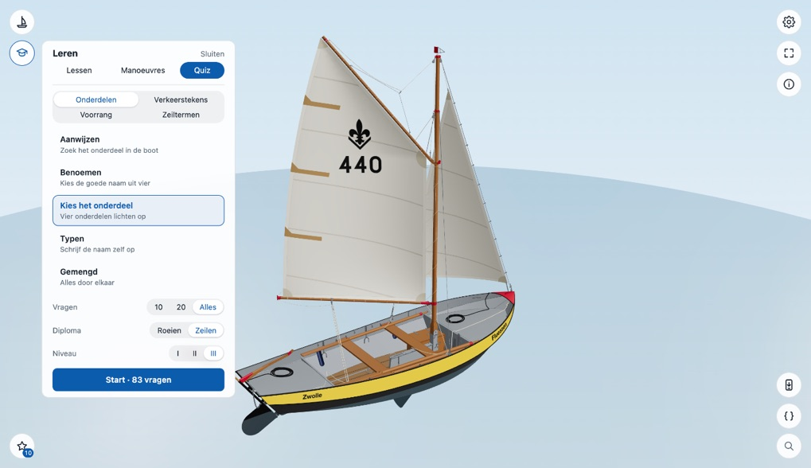
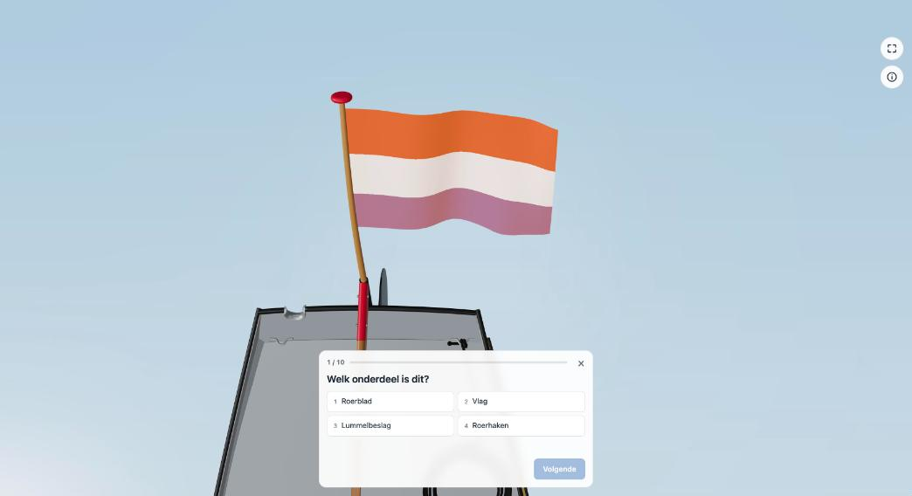

Quiz
Vier quizzen onder Leren › Quiz: Onderdelen (de namen van de onderdelen, op het niveau van je diploma), Verkeerstekens, Voorrang en Zeiltermen.
Onderdelen: een ronde kiezen


Open Leren, kies Quiz en daaronder Onderdelen. Er zijn vier soorten oefening, en een mengvorm:
- Aanwijzen: de naam staat er; klik het onderdeel aan in de boot en bevestig.
- Benoemen: het onderdeel licht op; kies de goede naam uit vier.
- Kies het onderdeel: vier onderdelen lichten op in vier kleuren; kies welke de genoemde is.
- Typen: het onderdeel licht op; typ de naam zelf. Een kleine typefout, hoofdletters of de/het ervoor rekenen we niet fout. De goede schrijfwijze zie je daarna altijd.
- Gemengd: alles door elkaar.
Daaronder kies je hoeveel vragen (10, 20 of alles), het diploma (Roeien of Zeilen) en bij zeilen het niveau (I, II of III). Hoe hoger, hoe meer onderdelen erbij komen. De niveaus zijn die van CWO Roeien en CWO Zeilen.
Onderdelen: een vraag


De camera vliegt naar het onderdeel. Antwoord met een klik of met 1 tot 4, en ga verder met Volgende. Na de ronde zie je je score; met Oefen je fouten krijg je de vragen die je fout had nog een keer. Je beste score wordt in je browser onthouden.
Welke onderdelen op welk niveau gevraagd worden, staat in de lijst met onderdelen. Een groep die de viewer op de eigen site zet, kan zelf vragen weglaten of toevoegen.
Voorrang
Onder Leren › Quiz › Voorrang kies je Makkelijk, Normaal of Moeilijk, en je krijgt steeds een nieuwe situatie op het water, met een tekening van bovenaf. De boten heten A en B, bij moeilijk soms ook C; een van hen is de lelievlet, zeilend of roeiend. Zeg wie er voorgaat; bij drie boten kies je de volgorde. Daarna gaan ze varen, wijkt de juiste uit en lees je welke regels het beslissen. Met Volgende krijg je er nog een van hetzelfde niveau. Je score geldt voor dit bezoek.
- Makkelijk: oplopen, en zeilen of roeien tegen een motorboot.
- Normaal: grote schepen, zeilschepen onderling, en gelijke schepen.
- Moeilijk: loef en lij, de stuurboordwal, en drie boten tegelijk.
Zeiltermen
Onder Leren › Quiz › Zeiltermen vaart de boot op een koers, en een vraag vraagt wat je ziet: welke koers het is, over welke kant de wind binnenkomt, of een kant met een vraagteken bakboord of stuurboord is (soms van voren gezien), loef of lij, of een wal de hogerwal of de lagerwal is, en of de boot oploeft of afvalt. Kies één soort of Gemengd. Na je antwoord staan de woorden op de boot en in de tekening; met Volgende krijg je een nieuwe vraag. Je score geldt voor dit bezoek.